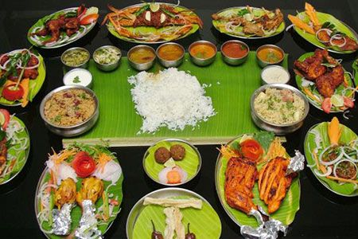

1 / 7

Caption Text
2 / 7

Caption Two
3 / 7

Caption Three
4 / 7

Caption Four
5 / 7

Caption Five
6 / 7

Caption Six
7 / 7

Caption Seven
Best food
in
Nellore
Andhra Toursims

Harini Foods- Srihari Nagar, B. V. Nagar, Nellore, Andhra Pradesh 524003
Iron Hill- Annamayya Cir, beside PVR Kalyanamandapam Mandapam, ISKCON City, Magunta Layout, Nellore, Andhra Pradesh 524003
55 Bistro- 3rd Floor, Sreeman Enclave, Kings court, Srihari Nagar, Magunta Layout, Nellore, Andhra Pradesh 524003
Minerva Grand- Saraswathi Nagar, Dargamitta, Nellore, Andhra Pradesh 524003
Murali Krishna- Grand Trunk Road, near, Madras bustand, Nellore, Andhra Pradesh 524001
Presto- Near Sakshi News Paper Survey no 200-1, NH45, Kondayapalem, Nellore, Andhra Pradesh 524002
Riaz Biriyani - Leela Mahal Road, Achari St, Nellore, Andhra Pradesh 524001